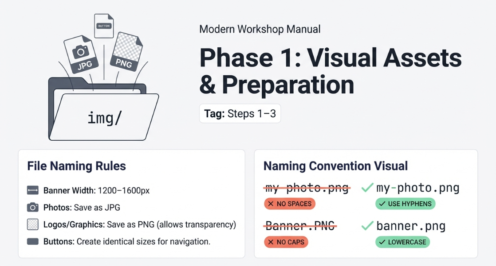
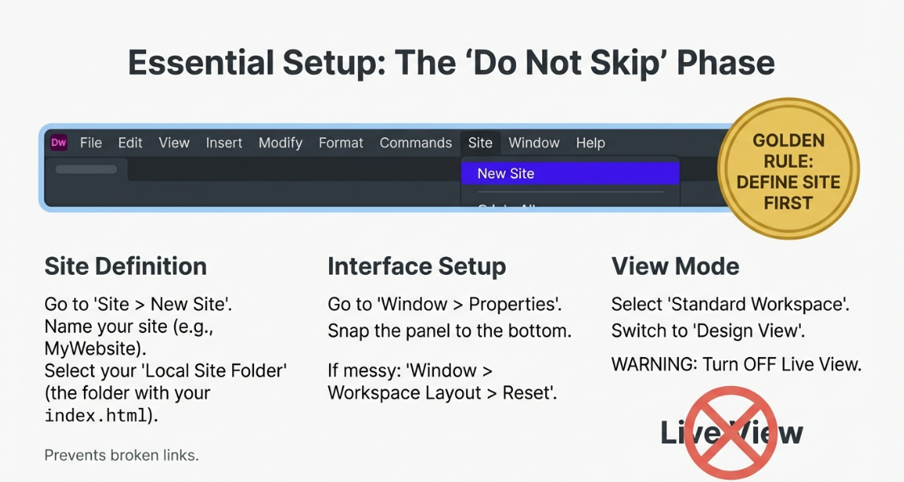
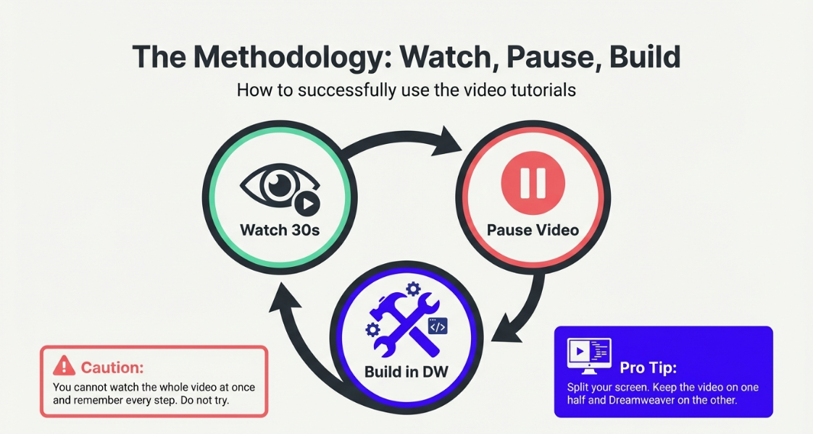

Build your site,
one step at a time.
Fifteen short video steps take you from Canva graphics to a finished, working website in Dreamweaver.

Get your assets ready.
Export your banner, buttons and images from Canva and save them into img/.

Set up your workspace.
Dock your panels, reset the workspace if needed, and work in Design view, not Live View.

Watch. Pause. Do.
Watch 30–60 seconds, pause, build that part, then repeat. Split your screen so you can see the video and Dreamweaver together.
Do this first,
every lesson.
Most “broken” websites come from skipping this setup. Two minutes here saves you a lesson of missing images and dead links.
Most common fix: define your site, then switch to Design view.
- Define your site. Site → New Site… Give it a name, then choose your project folder (the one containing index.html, style.css and img/) as the Local Site Folder. Save.
- Dock the Properties panel. Window → Properties, then drag the bar until it snaps into the workspace, usually along the bottom.
- Use a standard workspace. If your panels are messy: Window → Workspace Layout → Reset.
- Switch to Design view. Choose Design at the top of the document window and turn off Live View.
From Canva to browser.
Each step has a video, a checklist, common mistakes and a self-check.
Prepare your graphics
Design and export the banner, images and buttons in Canva.
01Making the BannerTip: Keep the banner width consistent (1200–1600px). Export PNG for graphics, JPG for photos.02Saving Graphics from CanvaTip: Use clear names like logo.png. Avoid spaces in file names.03Creating Website Buttons in CanvaTip: Make all buttons the same size. Check contrast so text is readable.Build in Dreamweaver
Define the site, build a template and fill your pages.
04Setting up DreamweaverTip: If something is “broken”, the site usually isn’t defined or you’re in Live View.05HTML Layout / StructureTip: Keep content inside a container so it doesn’t stretch too wide.06Creating a Template HTML PageTip: Copy the template to create new pages. Don’t start from scratch each time.07Setting up Website PagesTip: Use simple names: about.html, gallery.html, contact.html.08Adding TextTip: Use headings (H2/H3) and white space. Keep paragraphs short.09Adding ImagesTip: Resize images before importing, and add alt text for accessibility.Add media & features
Embed video, maps, forms and a gallery, then polish.
10Adding a YouTube VideoTip: Use the embed iframe code, not the normal YouTube URL.11Embed an MP4 Video Exported from CanvaTip: 720p is usually enough. Large MP4s load slowly.12Adding a MapTip: Choose a useful zoom level and check it doesn’t overflow on a phone.13Adding a Data Capture FormTip: Only collect what you need, and test your form properly.14Adding an HTML Gallery to a WebsiteTip: Keep thumbnails the same size so the grid lines up neatly.15Building a Whole Website in CanvaTip: Keep a backup, and make sure your homepage is called index.html.Using ChatGPT safely.
Generate small, tidy HTML and CSS components, then paste them into Dreamweaver properly.
Keep it together. Keep it working.
Keep pages, CSS and images in one folder. Click every link before you submit. No spaces in file names: use dashes.